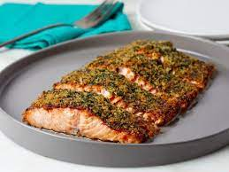

Citrus-Herbed Baked Salmon

An amazing recipe for amateurs or those who aren't confident in the kitchen. A dish which combines great taste and an outstanding nutritional value
Ingredients
- 4 Lemons
- 1 Red onion
- 2 salmon fillets
- basil
- dill
- salt
The portions apply for a meal prepared for 4 people
- Preheat oven to 350 degrees. Put two large squares of aluminum foil onto a large, flat work surface.
- Make a bed of lemon slices in the center of each foil square; top with red onion. Lay a salmon fillet atop each pile of lemon slices and onion; season with basil, dill, and sea salt. Fold edges of the aluminum foil over the salmon and seal completely.
- Bake in the preheated oven until the fish flakes easily with a fork, about 25 minutes.
- Remove salmon from foil pouch, place on plate, and drizzle juices from foil pouch over the fish.
If you found any problems please refer to the link below
Recipe Guide
Back to Home